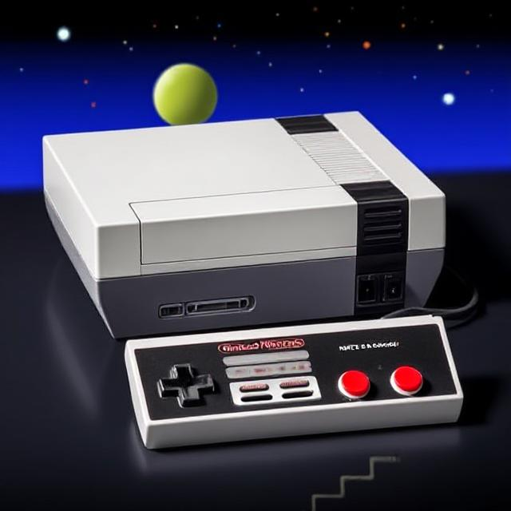
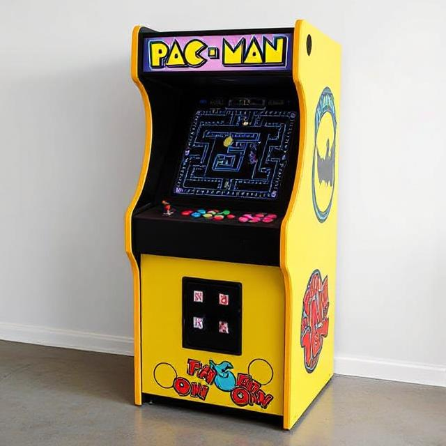
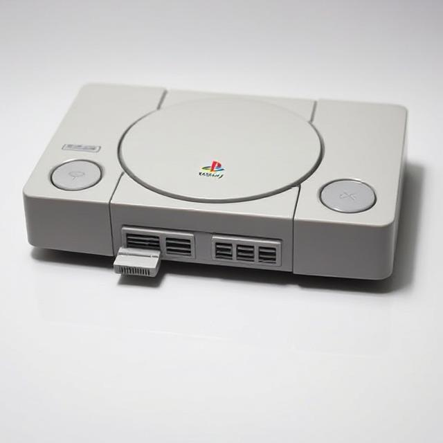

Hardware

Nintendo Entertainment System (NES)
Size/Weight/Shape: Approx 10 x 8 x 3 inches, rectangular console, 2.5 lbs
Release Day: Released 1983
Condition State: Good, some cosmetic wear
Origin: Donated by local collector, Seattle, WA
Use and Function: Home video game console
Primary Use: Entertainment machine for running cartridge games
Evidence of Use: Wear on controller ports, scratches on case
Manufacture Clues: Injection-molded plastic, stamped metal chassis
Cultural Context: Popularized home gaming in North America
Contributed With: Two controllers, power adapter, RF switch
Symbolism: Iconic symbol of 1980s gaming culture
Comparison: Similar to Famicom, predecessor to SNES

Pac-Man Arcade Machine
Material: Wood cabinet, metal frame, plastic joystick/buttons, CRT screen
Size/Weight/Shape: Approx 70 x 24 x 30 inches, upright cabinet, 200 lbs
Release Day: Released 1980
Condition: Fair, some paint chipping and wear on controls
Contributed by: Former arcade in San Francisco, CA
Use and Function: Public arcade gaming machine
Likely Purpose: Entertainment, social gaming hub
Manufacture Clues: Printed graphics, screw-fastened panels
Cultural Context: One of the most iconic arcade games in history
Found With: Coin door intact, original wiring
Symbolism: Represents the golden age of arcade gaming and social gaming culture
Comparison: Similar to Ms. Pac-Man cabinet, sequel machine

Sony PlayStation 1
Material: Plastic casing, optical drive components, circuit boards
Size/Weight/Shape: Approx 10 x 7 x 2 inches, rectangular console, 2.5 lbs
Release Day: Released 1994
Preservation State: Excellent, minimal use signs
Contributed By: Donated by collector, Tokyo, Japan
Use and Function: Home video game console
Likely Purpose: Entertainment platform for CD-ROM games
Evidence of Use: Slight surface scratches
Manufacture Clues: Injection molded parts, laser etched logos
Cultural Context: Popularized 3D gaming and CD format
Contributed With: Controller, power adapter, memory card
Burial or Habitat Context: Personal collection
Symbolism: Sony’s first major gaming console, began a dominant era
Comparison: Competed with Nintendo 64, Sega Saturn